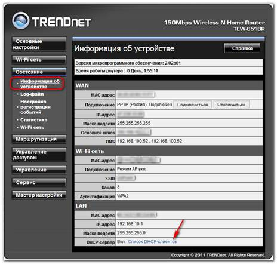
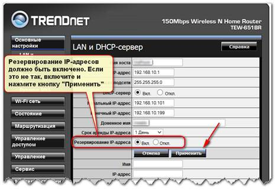
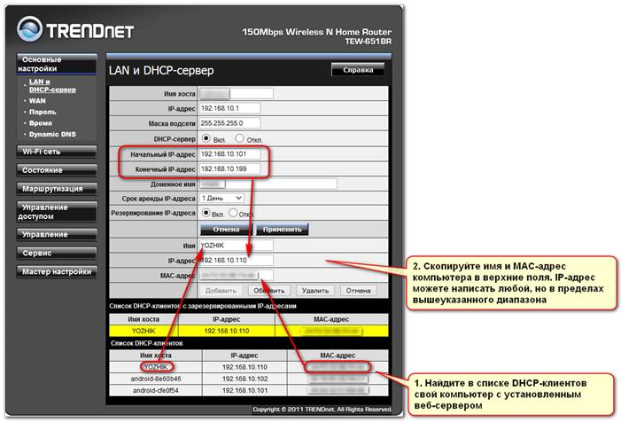
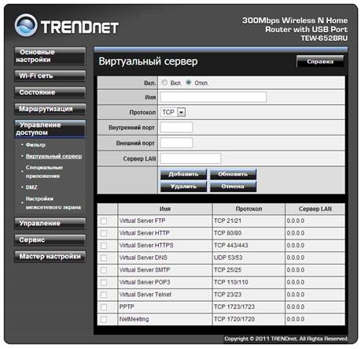

Пример настройки домашнего роутера
Очень часто в домашней сети используется роутеры (еще их называют маршрутизаторами), которые обеспечивают подключение компьютеров и устройств домашней сети к каналу связи провайдера интернета.
Попутно современные роутеры выполняют еще несколько задач: служат точкой доступа wi-fi, защищают домашнюю сеть от внешних атак и т.д. Чтобы мобильные устройства могли беспрепятственно обмениваться данными компьютером, на котором установлен веб-сервер, нужно выполнить несколько несложных настроек на роутере:
· сделать IP-адрес компьютера постоянным;
· и сделать веб-сервер видимым для других компьютеров сети (это называется «пробросить порт»).
Разные модели роутеров предоставляют разные интерфейсы и иногда используют различные термины для обозначения одних и тех-же вещей. Пример настройки будет показан на роутерах TrendNet, но настройка роутеров других фирм не сильно отличается от данного примера. В любом случае, найти подробное описание настроек именно вашей модели маршрутизатора можно в документации на него, или в многочисленных статьях в интернет.
Обычно, все настройки роутера осуществляются через веб-интерфейс. Откройте браузер на любом компьютере в домашней сети и введите в адресной строке адрес своего роутера. Чаще всего этим адресом является 192.186.0.1 или 192.186.1.1 или 192.186.10.1.
На открывшейся странице введите имя и пароль администратора (если вы не меняли заводские настройки роутера, то скорей всего и именем и паролем будет слово «admin»).
Найдите в настройках своего роутера список DHCP-клиентов, как показано на картинке

В этом списке будут перечислены все компьютеры и мобильные устройства домашней сети, которым в данным момент роутер выдал локальные адреса. Выдачу эти адресов роутер осуществляет динамически, что совсем не удобно для компьютера, к которому должны обращаться за информацией другие компьютеры сети. Чтобы у компьютера с веб-сервером адрес был всегда один и тот же, нужно:
а) включить резервирование IP-адреса

б) найти в списке DHCP-клиентов компьютер, на котором установлен веб-сервер, и вписать его имя и MAC-адрес в список зарезервированных IP-адресов, как показано на картинке ниже:

После того, как зарезервируете адрес, следует перезагрузить роутер.
Если при установке веб-сервера использовался порт, отличный от порта 80, то необходимо будет добавить его в список портов виртуального сервера (на других моделях роутеров этот список может называться по-другому)

Откройте раздел «Управление доступом» - «Виртуальный сервер». Заполните поля следующими значениями:
· Имя – любое наименование, но желательно латинскими буквами
· Протокол – выберите TCP или TCP/UDP. Если на вашей модели есть пункт «Все протоколы», выбирайте его.
· В полях Внешний порт и Внутренний порт укажите номер порта, на котором работает ваш веб-сервер
· Сервер LAN – укажите внутренний адрес компьютера, на котором установлен веб-сервер. Например, если смотреть настройки сделанные выше, то в этом поле должно быть написано «192.168.10.110».
После заполнения всех полей нажмите кнопку «Добавить».
Этих настроек достаточно, чтобы с любого мобильного устройства или другого компьютера домашней сети можно было получить доступ к веб-серверу, и адрес этого веб-сервера всегда был одним и тем же.